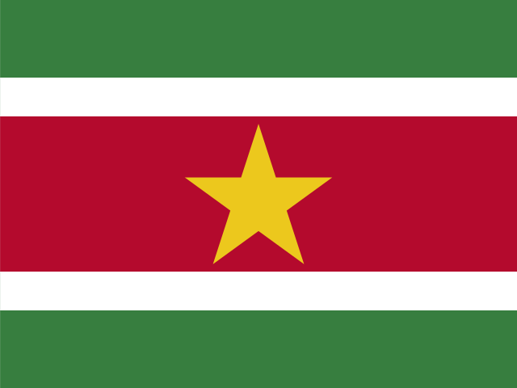

Countries › Oceania
Fiji
Where Fiji stands out
▲ MOST
3rd

Suriname1234thFiji114
5th Lithuania101
Lithuania101
4th of 171 · Food and Agriculture Organization (FAO) Food Balance Sheets, 2023
▲ MOST
4th Libya10.2%
Libya10.2%
5thFiji9.4%
6th India9.2%
India9.2%
5th of 188 · World Bank, World Development Indicators (WDI), 2023
▲ MOST
7thGrenada10.2
8thFiji8.5
9th Nigeria8.2
Nigeria8.2
8th of 171 · FAO Food Balance Sheets, 2023
▲ MOST
11th Bangladesh2,666
Bangladesh2,666
12thFiji2,592
13th Sierra Leone2,526
Sierra Leone2,526
12th of 179 · FAO, via World Bank, WDI, 2022
Size, sea and borders
18,270 square kilometres (km²)151st of 195
Sea area it controlsMarine Regions, World Exclusive Economic Zone (EEZ) version 12, 2023 · doi.org
1,302,114 km²26th of 191
CoastlineCentral Intelligence Agency (CIA) World Factbook, 2024 edition, 2024 · web.archive.org (cia.gov)
1,129 kilometres (km)71st of 193
Number of land bordersGeoNames, 2026-08 · download.geonames.org
0158th of 195, tied with 37
Land and height
1,324 metres (m)141st of 194
Rainfall a yearFAO, via World Bank, WDI, 2022 · data.worldbank.org
2,592 mm12th of 179
Fresh water per personFood and Agriculture Organization water database (AQUASTAT), via World Bank, WDI, 2022 · data.worldbank.org
31,052 cubic metres (m³)18th of 180
60.9% of land29th of 192
People
924,145 people158th of 195
Population densityWorld Bank, WDI, 2023 · data.worldbank.org
50.6 people per km²132nd of 192
27.7 years110th of 195
67.3 years149th of 195
Share of its people living abroadUnited Nations Department of Economic and Social Affairs (UN DESA) International Migrant Stock 2024, 2020 · un.org
18.5%27th of 193
Food, power and travel
9.4% a year5th of 188
Horses per personFood and Agriculture Organization statistical database (FAOSTAT), 2023 · bulks-faostat.fao.org
0.05111th of 141
Poultry supplyFAO Food Balance Sheets, 2023 · bulks-faostat.fao.org
46.8 kg per person a year24th of 171
8.5 kg per person a year8th of 171
114 kg per person a year4th of 171
26121st of 189, tied with 2
Football and chess
Football internationals played, all timeInternational football results (martj42), 2026 · github.com
268137th of 193, tied with 1
Showing 20 highlights for Fiji. Rank counts from the highest value among the countries that have data: 1st is the most. Ties share a rank. Data version 91, 22 November 2026.
Sort Fiji against four others
The game has figures for Fiji on 176 of its 190 questions.
The same game for Android and iOS. It launches on 10 December 2026.
Out now.